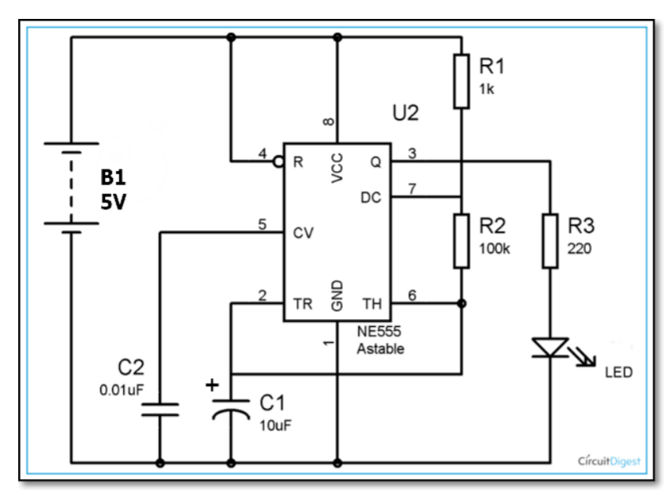

Arduino
Contents
Introduction
In this section, I will be showing some Arduino code examples using ThinkerCAD. Comments can be found in the code to better explain what each section of the code does. Feel free to play around with it to better understand what it does.
What is Arduino?
Arduino is an open-source electronic platform used to build electronic projects. It is used it simple beginner projects to final prototypes. It has a strong community of programmers and engineers supporting creating open source libraries to support all kinds off electronic parts.
What is C++
C++ is an object oriented programming language built to expand the C language. It is commonly used in building embedded systems, app development and system on chips (SOC).
Basic Projects
Here are 3 basic projects you can try!
555 Timer
The first task is to convert the following 555 Timer Schematic into a circuit on TinkerCAD.
555 Timer schematic
Blinking Lights
The second task is to connect 3 LEDs and have them flash in order.
Switching States
The task here is to change the between 5 different states of lightbulbs being on and off with the press of a button. Holding the button should reset the light switch to its default state.
The 5 states are as follows:
- All LEDs are off
- Red LED is flashing
- Green LED is flashing
- White LED is flashing
- All LEDs are flashing
Here is an example of the circuit in action